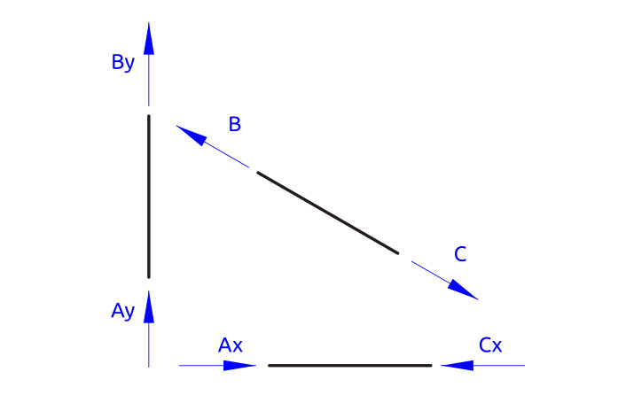

truss
Table of Contents
1. Υπολογισμός δοκών στήριξης
Η διάταξη του γερανού είναι χωροδικτύωμα.
1.1. Χωροδικτύωμα
Αρχικά θεωρείται πως οι προβολοι το γερανου είναι ραβδοι και δέχονται δυνάμεις μόνο σε εφελκυσμό και θλίψη.

Οι θέσεις των κόμβων σε αυτή τη φάση είναι προσεγγιστικές για την αρχική σχεδίαση.
Οι δυνάμεις σε κάθε κόμβο (Α), (Β), (C) προέρχονται από εφελκυσμό και θλίψη στην αντίστοιχη διευθυνση της κάθε ράβδου.
Το άθροισμα των δυνάμεων σε κάθε κόμβο είναι μηδέν, δηλαδή,
\[\sum Α=0\]
\[\sum Β=0\]
\[\sum C=0\]
Οι δυνάμεις σε κάθε ράβδο μπορεί να είναι εφελκυστικές ή θλιπτικές.

1.2. Σταθερότητα χωροδικτυώματος
Υπολογίζεται αν το χωροδικτύωμα είναι στατικά ορισμένο.
https://www.sjsu.edu/people/steven.vukazich/docs/160.4.3%20Truss%20Stability.pdf
https://en.wikipedia.org/wiki/Truss
Ο υπολογισμός γίνεται με βάση την τιμή:
\[m-2\times j-r\]
όπου,
\(m\) o αριθμός των μελών
\(j\) o αριθμός των κόμβων
\(r\) ο αριθμός των στηρίξεων.
Στο γερανό έχουμε:
| ραβδοι (m) | κόμβοι (j) | r(αντιδράσεις) | m-2j+r | m-2j+3 |
|---|---|---|---|---|
| 3 | 3 | 2 | -1 | 0 |
| >0 σταθερό | στατικά ορισμενο | |||
Υπολογίζονται:
| Είδος που υπολογίζεται | αγνωστοι |
|---|---|
| Δυνάμεις (εφελκυσμό-θλίψη) σε 3 ράβδους | 3 |
| Δυνάμεις στήριξης( αντιδράσεις στα (Α),(Β) | 2 |
| Αθροισμα αγνωστες τιμές : | 5 |
Ο κάθε κόμβος δίνει 2 εξισώσεις 1 κατά διευθυνση \(Χ\) και 1 κατά \(Υ\).
| Εξισώσεις | κομβοι |
|---|---|
| Εξισώσεις Κατά Χ | 3 |
| Εξισώσεις Κατά Υ | 3 |
| Δεδομένες εξισώσεις | 6 |
Το πρόβλημα είναι γραμμικό.
Έχουμε 1 παραπάνω εξίσωση από άγνωστο.
Το σύστημα είναι σταθερό αλλά αόριστο.
Για να υπολογιστεί χρειάζεται ο υπολογισμός και των παραμορφώσεων.
Πρακτικά θεωρούμε πως το (Β) είναι κύλιση και το κάθετο βάρος του γερανού, λαμβάνεται εξ'όλοκλήρου στο (Α). Το οποιό είναι υπερδιαστασιολόγηση για τη στήριξη (Α).
1.3. Υπολογίσμός χωρίς τη στήριξη (ΑΒ)
Αγνοουμε για λίγο το μέλος (ΑΒ). και θεωρούμε 2 μέλη AC, BC.
| ραβδοι (m) | κόμβοι(j) | r(αντιδράσεις) | m-2j+r | m-2j+3 |
|---|---|---|---|---|
| 2 | 3 | 2 | -2 | -1 |
| >0 σταθερό | αοριστο |
Στο γερανό είναι
| ραβδοι (m) | κόμβοι(j) | r(αντιδράσεις) | m-2j+r | m-2j+3 |
|---|---|---|---|---|
| 2 | 3 | 2 | -2 | -1 |
| >0 σταθερό | αοριστο | |||
Πρέπει να υπολογίστούν:
| Δυνάμεις (εφελκυσμό-θλίψη) σε 3 ράβδους | 2 άγνωστοι |
| Δυνάμεις στήριξης( αντιδράσεις στα (Α),(Β) | 2 άγνώστοι |
| 4 άγνωστες τιμές |
Ο κάθε κόμβος δίνει 2 εξισώσεις 1 κατά διευθυνση Χ και 1 κατά Υ.
| κομβοι | |
|---|---|
| Εξισώσεις Κατά Χ | 3 |
| Εξισώσεις Κατά Υ | 3 |
| Δεδομένες εξισώσεις | 6 |
1.4. 1η προσεγγιση ως προς τις δυνάμεις ως χωροδικτύωμα
Μια πρώτη προσέγγιση για των υπολογισμό των δυνάμεων είναι:
Απο τις δυνάμεις η γνωστή είναι η δύναμη του φορτίου στο ακρο C.
Από τα τριγωνο των δυνάμεων χρησιμοποιυμε τη γεωμετρική λύση.
Επειδη η γωνία είναι \(~30^ο\) σχηματιζεται ισόπλευρο τρίγωνο


Οι δυνάμεις κοπής υπολογίζονται σε κάθε σημείο:
\[C_2C_3=2\times C_1C_2\]
\[C_1C_3=1.7\times C_1C_2\]
1.5. Υπολογισμός δυνάμεων στο χωροδικτύωμα
H δυναμη \(C_y\) είναι η μέγιστη δύναμη που ασκείται στο \(C\), η το πιο απομακρυσμένο σημέιο από τη στήριξη.
Θεωρείται για τους υπολογισμούς του σχεδιασμου πως αυτή είναι η δυσμενέστερη θέση απο άποψη αντοχής.
Οι δυναμεις σε αυτό το σημείο είναι από τα δεδομένα του προβλήματος:
| Είδος δύναμης | Τιμή(Ν) |
|---|---|
| Μέγιστη δυνατότητα ανύψωσης: | 20000 |
| Συρματόσχοινο: | 860 |
| Γαντζος | 70 |
| Βαρος γερανού: | 6210 |
| Αθροισμα: | 27140 |
| 27.140kN |
Από τα διαγράμματα και τη γεωμετρια του τριγώνου υπολογίζονται οι δυνάμεις στους υπόλοιπους κόμβους:
| Δυναμή | Τυπος υπολογισμού | Τιμή | Μονάδες | |
|---|---|---|---|---|
| \(C_y\) | δεδομένο | 27,140 | kN | Βάρος φορτίου |
| \(C\) | \(2\times C_y\) | 54,28 | kN | εφελκυσμός στη ραβδο (ΒC) |
| \(C_x\) | \(1,7\times C_y\) | 92,27 | kN | θλίψη στη ραβδο (AC) |
| \(B\) | \(C\) | 54,28 | kN | εφελκυσμός στη ραβδο (ΒC) |
| \(B_x\) | \(0,6\times C\) | 32,56 | kN | *στηριξη στον τοιχο |
| \(B_y\) | \(0,5 \times B_x\) | 0 | **θεωρουμε κύλιση στο (Β) | |
| \(A_x\) | \(C_x\) | 46,13 | kN | θλίψη στη ραβδο (AC) |
| \(A_y\) | \(C_y\) | 27,14 | kN | **το βαρος του γερανού |
| \(Α\) | \(2\times A_y\) | 54,28 | kN | *στηριξη στον τοιχο |
*Οι δυνάμεις στήριξης στον τοίχο χρειάζονται για τον υπολογισμό των κοχλιών βάσεις (post) του γερανού.
**Το βάρος του γερανού προστίθεται ολόκληρο στη θέση (C), για λόγους υπολογισμού αντοχής. Ενα τμήμα του κάθετου φορτίου θα μπορούσε να λαμβάνεται από το (Β).
1.6. Τεχνικά χαρακτηριστικά χάλυβα
Τα δομικά στοιχεία του γερανού κατασκευάζονται από χάλύβα.
Τα τεχνικά χαρακτηριστικά του χάλυβα είναι:
| Είδος: | Τιμή | Μονάδες |
|---|---|---|
| Χάλυβας: St37 / AISI1006 | ||
| Παραμόρφωση: | 22 | % |
| Τάση διαρροής (0.2%) : | 370 | MPa |
| Μέγιστες διατμητικές τάσεις: | 230 | MPa |
| Πυκνότητα: | 7800 | \(Kg/m^3\) |
| Elastic modulus | 200 | \(GPa\) |